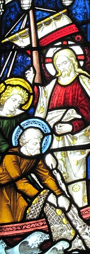

La Bouonne Nouvelle s'lon Luc: 5
Vèrsets 1-11

Assa i' s'adonnit que coumme lé monde tchaquenardaient pouor lus appréchi d'li et d'apprendre la pathole du Bouôn Dgieu, i' 'tait au bord d'eune mathe tch'avait nom Génésaret et il êpyit deux batchieaux au bord dé l'ieau, mais les pêtcheurs l's avaient laîssis pouor laver lus drannieaux. Et il embèrtchit dans iun des batchieaux, l'chein à Simon, et lî d'mandit dé l'cârrer un mio d'la tèrre. Un co assis, il ensîngnit l'monde dé d'dans l'baté. Un co sans discours ag'vé, i' dit à Simon, "Va iou qu'l'ieau est avant et hale au drannet pouor eune pêque."
Simon lî rêponnit, "Maît', j'têmes à chinner toute la niet et j'n'avêmes rein pêtchi, mais s'tu l'dis, j'm'en vais haler au drannet." Et quand il' eûdrent fait d'même, il' en pêtchîdrent eune si grande hâle dé paîssons qu'ou sembliait êt' à un fi près d'trilyi l'drannet. Et i' sîngnalîdrent ès anmîns dans l'aut' baté dé v'nîn lus bailli un co d'êpaûle. Et ieux, i' vîndrent et les deux bat'lées 'taient si chèrgies qu'i' 'taient pouor capsaïzer. Mais Simon l'Rotchi, quand i' vit chenna, s'êtrav'lit ès g'nouors dé Jésû et dit, "Lâque-mé, Seigneu, car mé j'sis un pécheux!" Ch'est en tchi i' 'tait êmèrvilyi et touos les cheins auve li étout d'la bouonne pêque qu'il' avaient halé; et chenna auve Dgémîn et Jean fis Zébédîn tchi 'taient des parchonnièrs à Simon.
Et Jésû dit à Simon, "N'sai pon êffrité; entré-chîn tu t'en vas haler des gens!" Et quand il' avaient attèrri, i' r'nonchîdrent tout et lus en fûdrent souotre li.
Vèrsets 12-26
Et i' s'adonnit qué quand i' 'tait dans ieune des villes, y'avait là un lépreux. Quand il êpyit Jésû, i' s'postèrnit l'avant à li et lî d'mandit, "Seigneu, s'tu'en es d'avis, tu pouôrras m'èrdgéthi." Et i' li'aveingnit sa main et l'touchit et dit, "J'sis d'avis qu'tu sais r'dgéthi." Et d'un co sa lèpre fut horte dé li. Et i' lî c'mandit dé n'dithe rein à fis d'âme, mais dé s'mouontrer au prêtre. "Fai un don d'èrmèrcîment pouor ta dgéthîthon, s'lon la louai d'Moïse, à seule fîn d'en têmouongni à tout l'monde!" Tout coumme nou-s'en pâlait d'pus en pus partoute la campangne, et nou vînt à li en fliotchets d'monde à seule fîn d'êt' èrdgéthis. Épis Jésû s'cârrit dg'ieux et s'en fut prier à san tout seu dans lé d'sèrt.
Et i' s'adonnit qu'un jour coumme i' 'tait à ensîngni, y'avait des Pharisiens et des maît's d'la louai assis là-bas. I' 'taient v'nus dé toutes les villes dé Galilée et Judée et d'Jéthusalem, et l'pouvé du Bouôn Dgieu 'tait auve li pouor les r'dgéthi. Êv'chîn tchiques hoummes avaient acanté ieux un malade paralŷsé sus eune chuviéthe à bras, et i' 'taient à tâchi d'l'apporter dans la maîson à seule fîn d'lé présenter l'avant à Jésû. Mais y'avait eune itelle dgaîngue dé monde qu'i' n'pûdrent pon l'sîlyi par-dédans, et don i' lus amontîdrent sus l'haut d'la maîson et lé d'valîdrent, sus sa chuviéthe, lé travèrs du lief ava au mitan du monde bidéramme l'avant à Jésû.
Quand i' r'mèrtchit lus fouai, i' dit, "Man vyi, tes péchés ont 'té pardonnés."
Les maît's d'la louai et les Pharisiens s'êcanchîdrent dé lus entré-hèrtchîngni: "Tchi qui s'crait, ch'tî-chîn? Tchille êcliandréthie! Tchi qui peut pardonner les péchés excepté l'Bouôn Dgieu?"
Jésû, tchi comprannait chein qu'i' pensaient, ieux, lus dit, "Pouortchi qu'ou pensez d'même? Ch'est-i' pus aîsi d'dithe, 'Tes péchés ont 'té pardonnés' ou d'dithe, 'Lève-té et va'? Mais à seule fîn d'vos mouontrer qué l'Fis d'l'houmme est autorisé d'pardonner les péchés ichîn bas..." Et i' s'adréchit à l'houmme tch'avait 'té paralŷsé. "... Lève-té, prends ta chiviéthe et r'va siez té!"
Et dêliêment i' s'mâtit l'avant à ieux, et prînt sa chiviéthe et s'en r'fut siez li en louangeant l'Bouôn Dgieu. I' fûdrent divèrsément êmèrvilyis et glorifyîdrent lé Bouôn Dgieu, tout coumme i' 'taient êffrités et dîdrent, "J'avons-t-i' veu des choses èrmèrquabl'yes aniet!"
Vèrsets 27-35
Et auprès chenna i' s'dêhalit et vit un tcheûteux d'taxe tch'avait nom Lévi, assis à san vitchet. Et Jésû lî dit, "Sié-mé!". Lévi s'mâtit, en laîssant tout driéthe, et siévit Jésû. Lévi griyit un grand fricot siez li pouor Jésû, et y'avait à tabl'ye dé compangnie auve ieux un fliotchet d'tcheûteurs d'taxe et d'aut' monde. Mais l's hoummes d'affaithes et les Pharisiens grounnaient ès approtis d'Jésû, "Pouortchi qu'ou mangiz et b'vez dé compangnie auve des tcheûteurs d'taxe et des pécheurs?"
Jésû lus dit, "Lé monde tchi sont d'charme né sont pon pouor êt' souongnis du docteu, mais les cheins tchi sont malades. Jé n'sis pon v'nu pouor faithe amender les justes mais les pécheurs."
Et i' lus dîdrent, "L's approtis à Jean sont d'amors à jeûner et à prier, et l's approtis ès Pharisiens étout, mais les tcheins sont d'amors à mangi et à baithe!"
Mais Jésû lus dit, "Ou n'pouvez pon însister qu'les învités ès neuches jeûnent quandi qu'lé bruman est d'compangnie auve ieux. Lé jour veindra quand l'bruman s'sa hors au liain dg'ieux, épis ché s'sa l'temps-là pouor jeûner."
Vèrsets 36-39
I' lus racontit acouo eune pathabole: "N'y'a fis d'âme tchi hale un cliu d'eune neuve câsaque à seule fîn d'lé rapiéchi à eune vielle câsaque, ch'est en tchi la neuve câsaque s'sait avrônée et l'neu cliu juth'thait d'auve la vielle. Et n'y'a fis d'âme tchi vèrse du frais vîn dans des vielles boutelles en tchui, dé peux qu'lé tchui en boste dé chu frais vîn et qu'lé vîn en dêgôle et qu'lé tchui en sait passecrit. Nan, ch'est qu'nou dait vèrser du frais vîn dans des neuves boutelles en tchui. Et n'y'a fis d'âme, ayant gouôté du vièr vîn, tch'est d'hait d'frais vîn. Véthe, i' dithait, 'Ch'est l'vièr vîn tchi vaut mus.'"
Viyiz étout:
- La Bibl'ye
- La Bouonne Nouvelle s'lon Luc: 1
- La Bouonne Nouvelle s'lon Saint Luc, chapitre iun, vèrsets 1-4
- La Bouonne Nouvelle s'lon Luc, Chapitre 1, vèrsets v-xxv
- L'Êvangile sélon Saint Luc, chapitre iun, vèrsets 26-38
- L'Êvangile sélon St.-Luc: chapitre 1 versêts xxvi à xxxviii - eune aut' vèrsion
- L'Êvangile sélon Saint Luc, chapitre iun, vèrsets 26-38 - eune aut' vèrsion
- La Bouonne Nouvelle s'lon Luc, Chapitre 1, vèrsets 39-56
- La Bouonne Nouvelle s'lon Luc: 2
- L'Êvangile sélon St.-Luc: chapitre 2 versêts i à vii
- L'Êvangile sélon St.-Luc, Chapitre deux, Vèrsets 1 à 7- eune aut' vèrsion
- L'Êvangile sélon Saint Luc, chapitre 2, vèrsets viii à xx
- L'Êvangile sélon St.-Luc, Chapitre deux, Vèrsets 8 à 20- eune aut' vèrsion
- L'Êvangile sélon St.-Luc: chapitre 2, versêts viii à xx - eune aut' vèrsion
- L'Êvangile sélon St.-Luc: Chapitre 2, Versêts 8 à 20 - eune aut' vèrsion
- La Bouonne Nouvelle s'lon Luc Chapitre 2, Vèrsets 21-24
- La Bouonne Nouvelle s'lon Luc, Chapitre 2, vèrsets 25-33
- La Bouonne Nouvelle s'lon Luc: 3
- La Bouonne Nouvelle s'lon Luc, Chapitre 3, vèrsets 23 à 38
- La Bouonne Nouvelle s'lon Luc: 4
- La Bouonne Nouvelle s'lon Luc: 6
- La Bouonne Nouvelle s'lon Luc: 7
- La Bouonne Nouvelle s'lon Luc, Chapitre 8
- La Bouonne Nouvelle s'lon Luc: 9
- La Bouonne Nouvelle s'lon Luc: 10
- Lé Bouôn Samathitain
- La Bouonne Nouvelle s'lon Luc: 11
- La Bouonne Nouvelle s'lon Luc: 12
- La Bouonne Nouvelle s'lon Luc: 13
- Luc: 14
- La Bouonne Nouvelle s'lon Luc, 15
- La Bouonne Nouvelle s'lon Luc, Chapitre 15, vèrsets viii-x
- L'Êfant Prodigue
- La Bouonne Nouvelle s'lon Luc: 16
- La Bouonne Nouvelle s'lon Luc: 17
- La Bouonne Nouvelle s'lon Luc: 18
- La Bouonne Nouvelle s'lon Luc, Chapitre 19
- La Bouonne Nouvelle s'lon Luc, chapitre 19, vêrsets 1-10
- L'Êvangile sélon Saint Luc, chapitre 19, vèrsets 42-44
- La Bouonne Nouvelle s'lon Luc: 20
- La Bouonne Nouvelle s'lon Luc, Chapitre 20, vèrsets 20-26
- La Bouonne Nouvelle s'lon Luc, Chapitre 21
- La Bouonne Nouvelle s'lon Luc: 22
- La Bouonne Nouvelle s'lon Luc, Chapitre 23
- La Bouonne Nouvelle s'lon Luc, Chapitre 24
- La Bouonne Nouvelle s'lon Saint Luc, chapitre 24, vèrsets 36-43